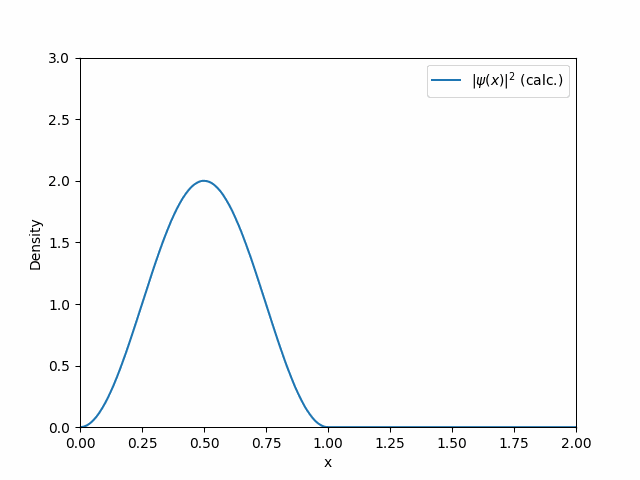
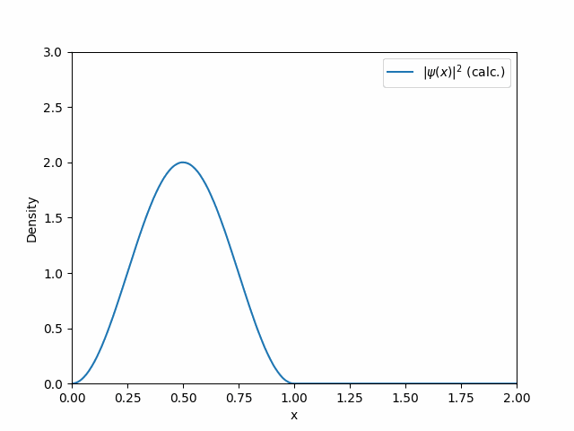

井戸の中の量子波束のダイナミクス
下記のノートでは、井戸型ポテンシャル中での量子波束のダイナミクスに関する厳密解についてぎろんしています。
ノート「ぽよぽよ量子波束ダイナミクスの厳密解」(pdfファイル)量子波束ダイナミクスの動画を作るPythonコード
上記のPythonコードによって出力される量子波束ダイナミクスの動画:
下記のノートでは、井戸型ポテンシャル中での量子波束のダイナミクスに関する厳密解についてぎろんしています。
ノート「ぽよぽよ量子波束ダイナミクスの厳密解」(pdfファイル)上記のPythonコードによって出力される量子波束ダイナミクスの動画:
